Library / Motion Graphics Styles
59 keywords in this category, each one tested and explained in plain language.
Pick keywords as you browse, then press Copy for AI and paste into ChatGPT, Claude or any AI. Copy keywords gives a plain list for Midjourney or Seedance.
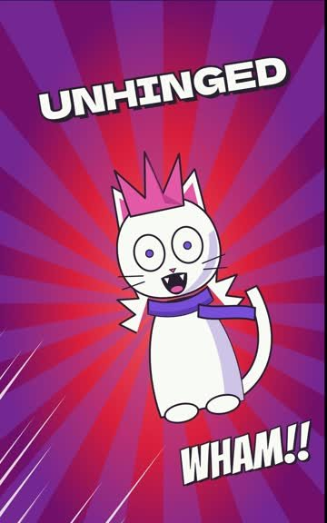
TV anime look with crisp linework, hard-edged shadows and painted skies.
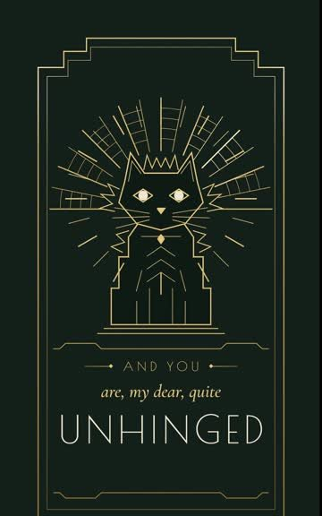
A 1920s poster engraving itself in gold: symmetrical ornament lines draw outward from the center, sunbursts fan open and elegant type rises into its frame.
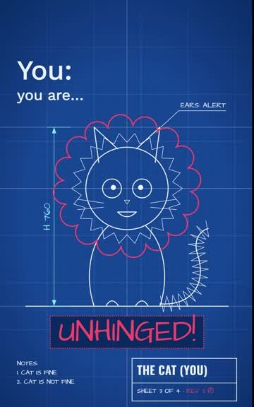
A crisp blueprint where white lines draw themselves over a blue grid and measurements snap into place, then the flat drawing rises off the page and fills with brick, glass, wood and daylight to become the real thing.
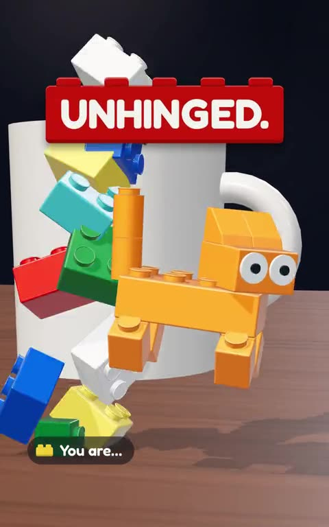
A stop motion film of glossy toy bricks on a wooden desk, shot up close: pieces fly in on arcs and click into place, little figures hold big poses, and household objects become mountains and moons.
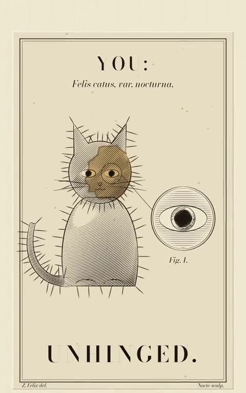
An old natural history plate that engraves itself: fine swelling lines cut into copper, the picture builds from outline to shading to cross-hatching, close-up details fly out in numbered circles, and a hand-laid color wash finishes it.
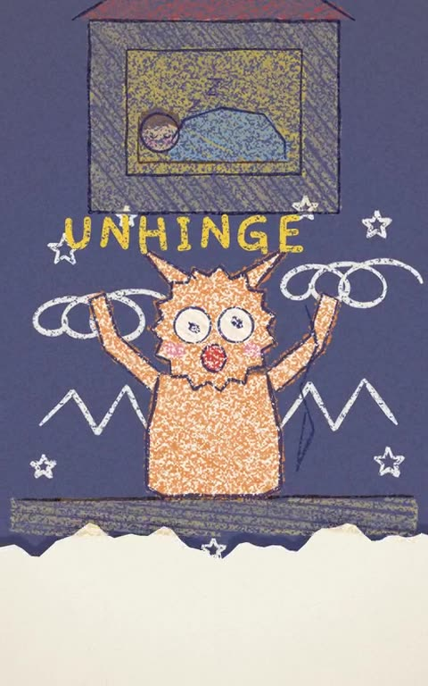
A children's book page being drawn as you watch: wax crayon on bumpy paper, color spilling past the lines, every line gently wiggling, and a watercolor wash that sweeps across to reveal hidden white crayon drawings.
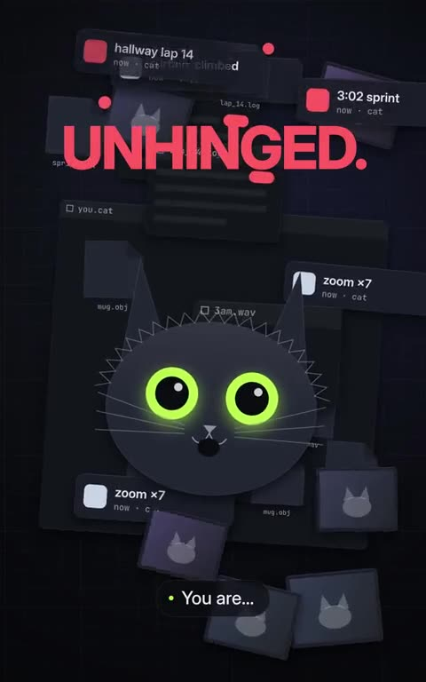
A software launch film on a near-black stage with a faint grid and soft cool light.
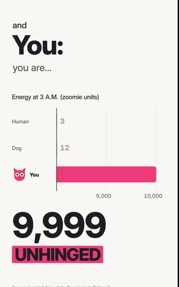
Numbers that tell a story: axes draw, bars grow, lines trace and counters tick up to exact values, then everything else dims so the key number stands out.
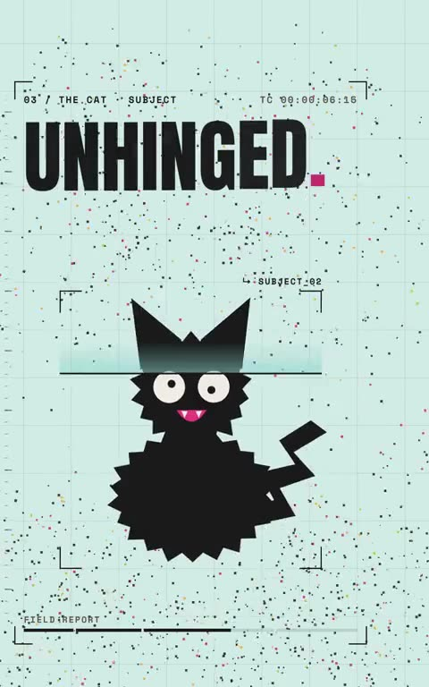
A precise magazine page come to life: giant narrow headlines, fine grid lines and a running on-screen readout like a timecode and progress bar, on pastel backgrounds.
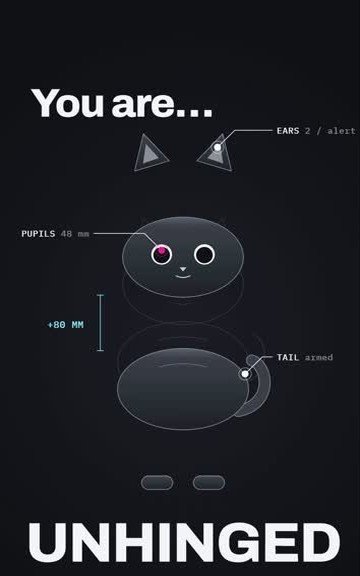
A clean tech reveal where a product separates layer by layer and floats apart in a calm studio.
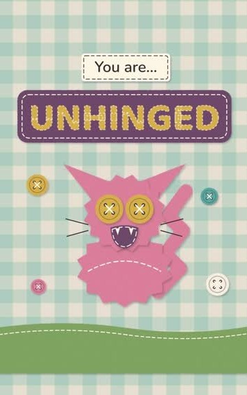
A cozy world made of felt shapes with fuzzy edges and hand stitching on a fabric backdrop.
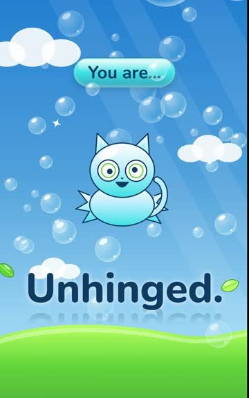
The hopeful tech look of the late 2000s: sky-blue gradients, glossy see-through bubbles, water droplets, fresh green leaves and shiny aqua buttons.
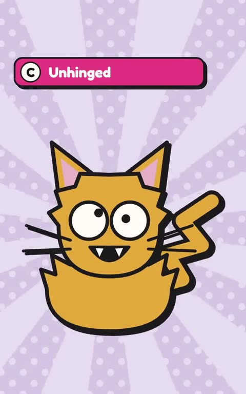
A sunny daytime TV quiz: flat shapes with thick outlines and hard shadows on striped and sunburst sets.
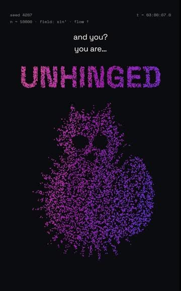
Art made by rules: thousands of tiny particles drift on invisible currents leaving fine trails, then gather into a word or shape on the beat, hold for a breath and dissolve back into the flow.
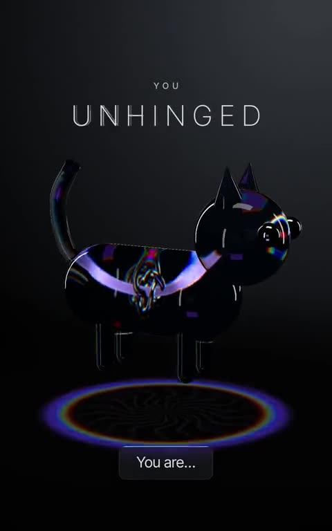
A see-through glass object floating in an endless black studio, outlined only by long strip lights that leave rainbow edges.
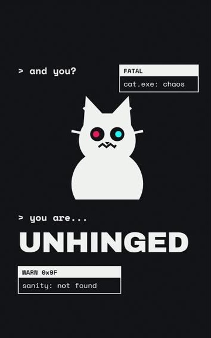
A clean picture that breaks on the beat: color channels split apart, slices of the frame tear sideways and pixels smear, then everything snaps back to perfect until the next hit.
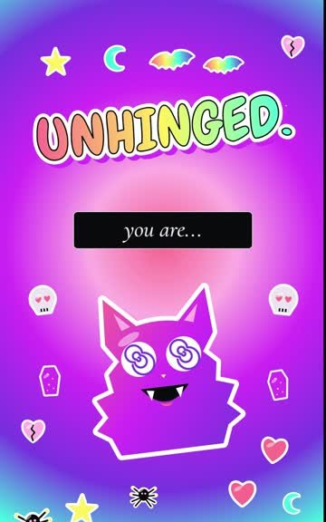
A black, deadpan, totally still frame with one unimpressed line of text, then a sudden explosion of candy rainbow gradients, sparkles, hearts and glossy stickers, then instantly back to stillness as if nothing happened.
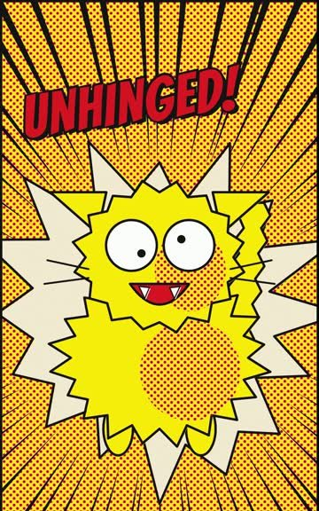
A vintage comic page come to life: thick black outlines, flat colors filled with printed dots, panels that wipe in one after another, and impact bursts that shake the frame.
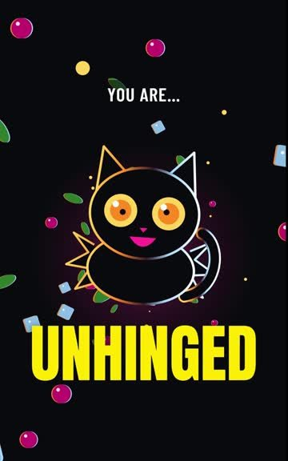
A high-speed close-up commercial where flames lick, splashes freeze mid-air and crumbs hang in slow motion, then everything snaps to full speed on the beat and the product lands center frame with its name slammed on top.
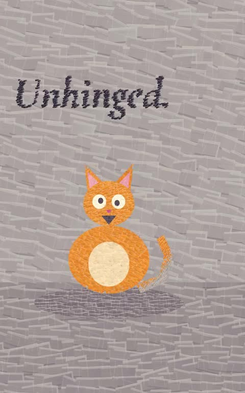
A moving oil painting laid on with a palette knife: big, flat, sharp-edged planes of thick paint, lit from the side so every ridge shows.
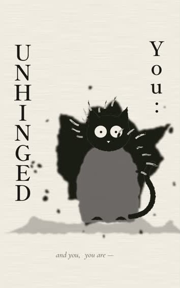
A quiet East Asian ink painting that paints itself: one brush lays tapering strokes, grey washes bloom outward like ink in water, and mountains or birds rise out of mist.
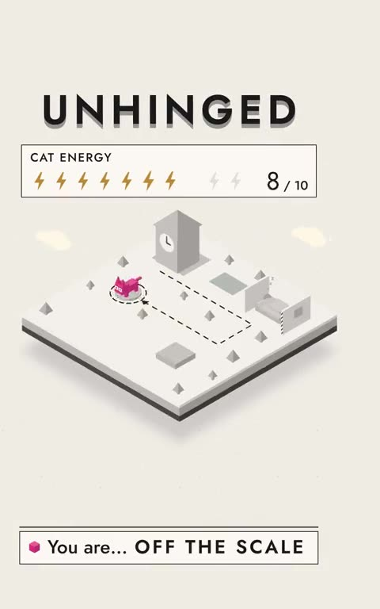
A system diagram come alive: one floating board of flat three-tone blocks seen from an angle, a dashed route leading from station to station, things slicing open to show their insides, and numbers shown as rows of tiny icons.
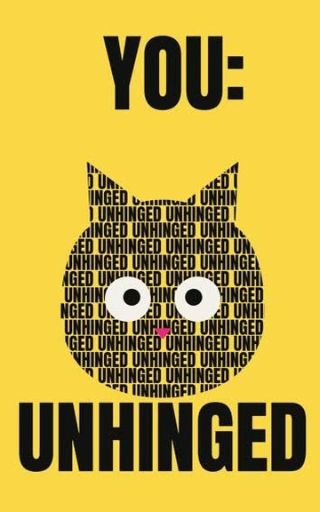
Words are the whole show: each spoken word lands on screen right as it is said, slamming, popping, sliding and stacking into bold layouts.
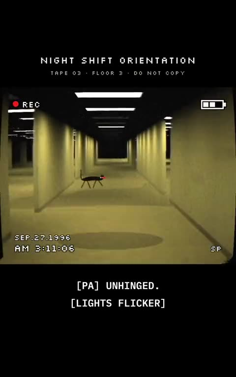
An old camcorder tape found in an empty, endless office lit by buzzing ceiling lights.
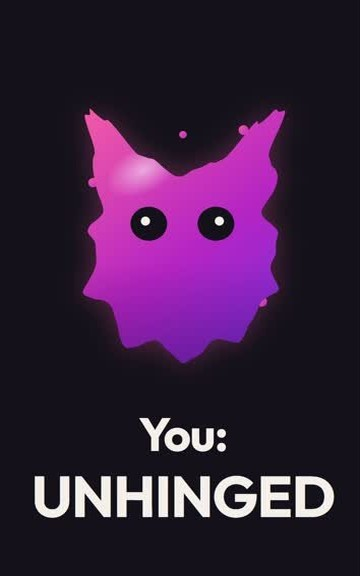
One glossy liquid shape that never cuts: it flows from a drop into an icon into a product into a logo, stretching and settling like thick syrup between each form, so the whole video is one smooth take.
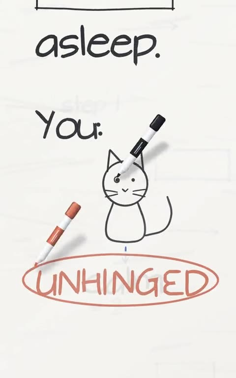
A lesson drawn live on one glossy whiteboard: real handwriting in proper stroke order, floating markers with no hand, a magnet that slides and an eraser that wipes, while the camera rides the pen from idea to idea.
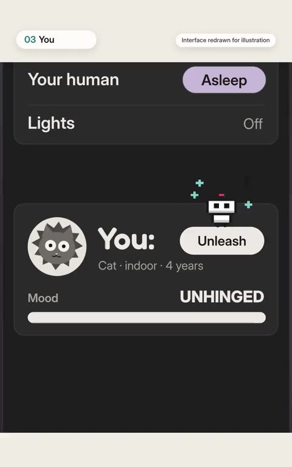
A calm screen recording that is secretly redrawn, so it stays sharp at any zoom.
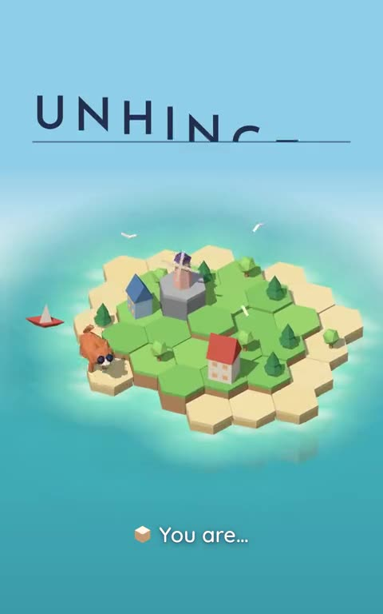
A tiny island made of flat faceted shapes floating in color, seen from a neat angle.
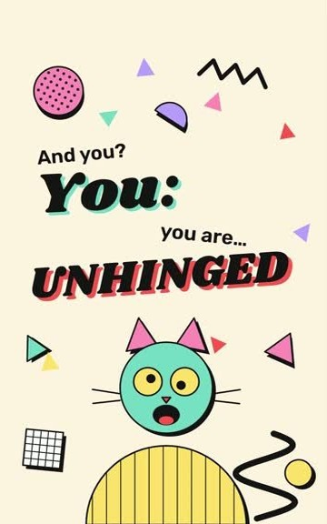
Loud 80s design in motion: squiggles, zigzags, confetti triangles and dotted circles in bright pastels with black outlines bounce into frame, cheerful and deliberately busy.
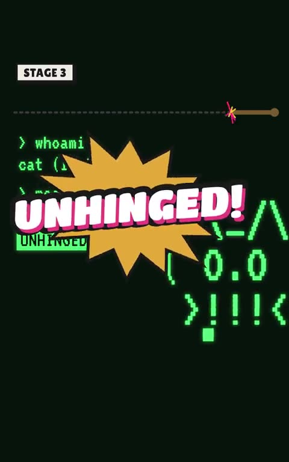
A rapid-fire party game film: a shouted command word, a few seconds, one action, one result, and each tiny game drawn in a totally different art style.
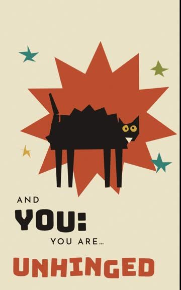
A 1960s cut-paper title sequence: flat, slightly wonky shapes in muted retro colors pop on and off to a swinging, jazzy rhythm, with hand-cut letters and lots of breathing room.
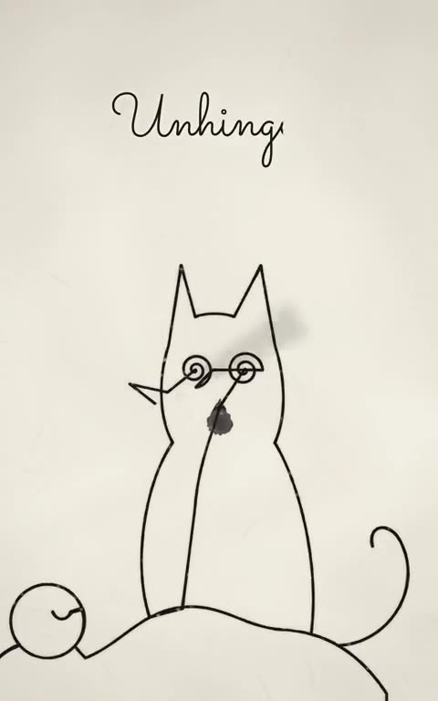
One warm black ink line that never leaves the paper, drawn live while the camera follows the pen.
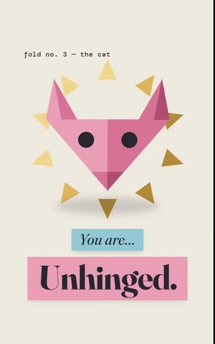
Folded paper that comes to life: flat squares crease along sharp lines and fold into birds, boats or icons, each face catching a different shade from one soft light.
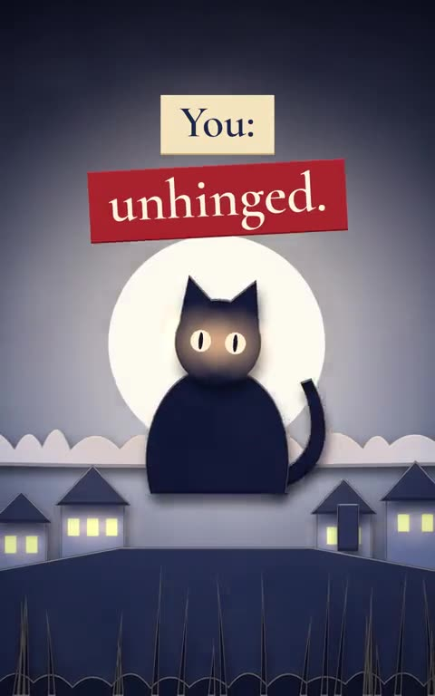
A layered paper shadow box lit from behind: sheets of cut card stacked in a shallow box, warm light glowing through the paper, windows and moons shining through holes.
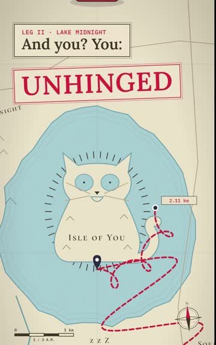
A journey told on a paper map: a dashed route draws itself from place to place, pins drop with a little bounce, place names stamp on, and the camera glides and tilts to follow the line.
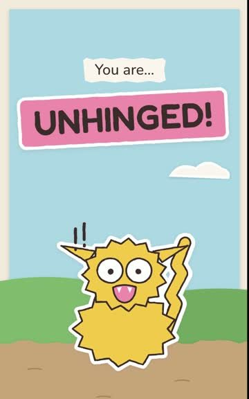
A warm handmade picture book where every character and prop is a paper sticker with a white border, layered on textured paper.
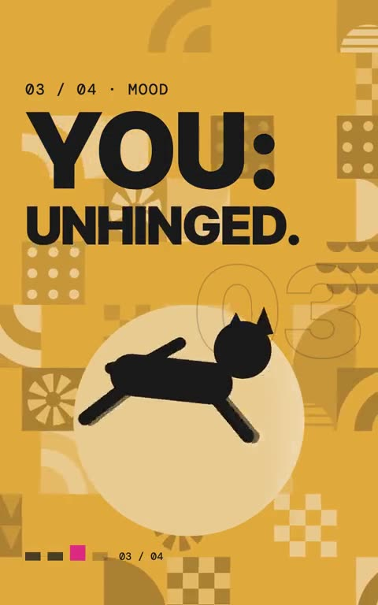
A sports-event style flash-card film: each card is one faceless stick-figure symbol doing one action on a big sun circle, with a huge heavy title and a small index number, over a grid pattern whose rows slide.
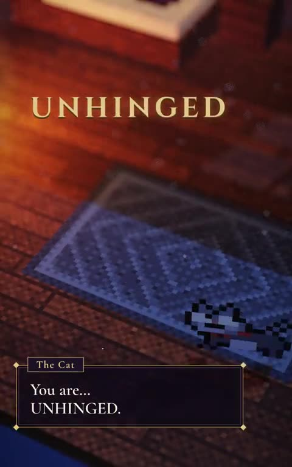
Flat pixel-art characters standing like paper cutouts inside a lit, foggy 3D miniature set, seen from above with a dreamy blur at the edges.
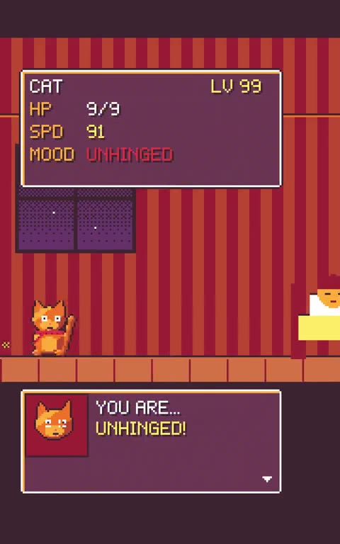
A short film that looks and behaves like an old console role-playing game: a tiny pixel world in a limited palette, dialog boxes that type, menus, save screens and stat bars, where the whole palette shifting shows the mood.
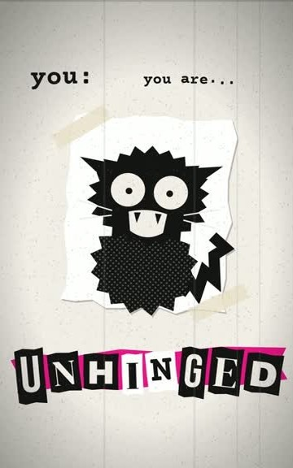
A homemade photocopied zine that builds itself: black and white cutouts, ransom-note letters and tape slap onto grainy paper, all a little crooked, with one loud accent color.
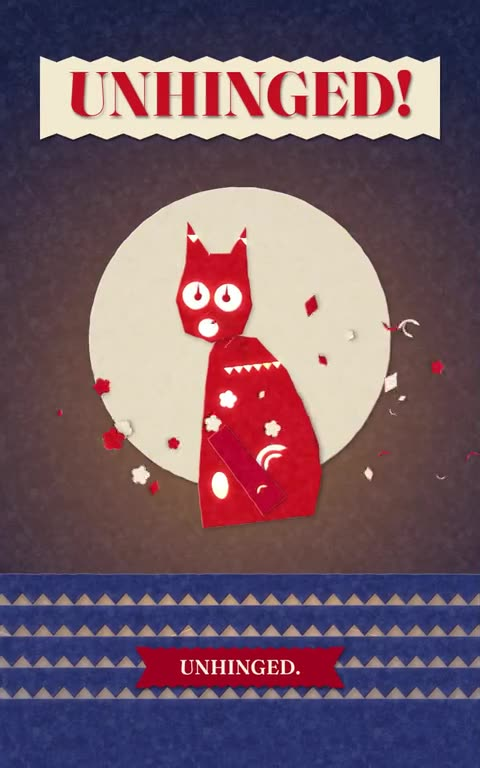
Chinese red paper window cuts brought to life: jointed red cutouts laid on paper, where the cut is the drawing and the holes let the light through.
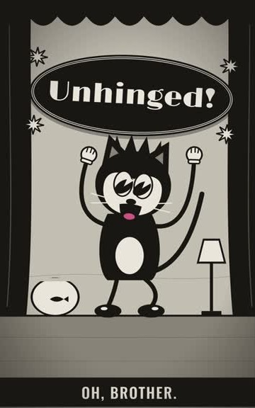
A scratchy old-time ink cartoon where characters, props and even buildings bounce to a jaunty band.
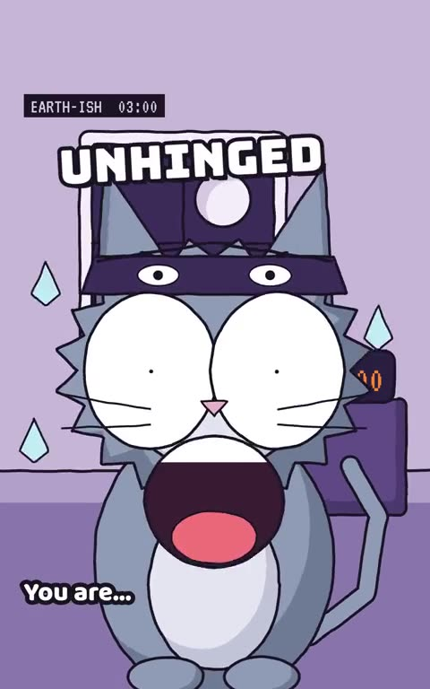
A grown-up sci-fi cartoon: thick dark outlines that never stop wiggling, flat colors with hard shadows, a deadpan hero and a panicking sidekick, and a glowing portal that jumps them between worlds, each in its own colors.
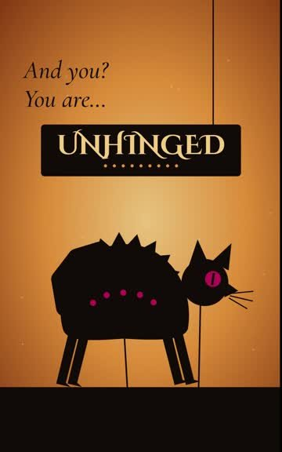
A shadow theatre in a warm lamp-lit room: black jointed puppets move across a glowing paper screen, swinging on their joints, blurring as they step away from the screen and flickering softly in the light.
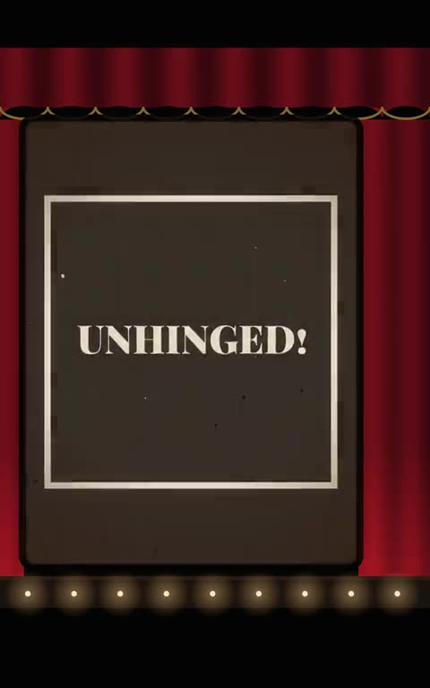
An old silent comedy as it would look projected: an engraved ink drawing with silver wash, on flickering, wobbling, scratched film in a square frame between velvet curtains, told in wide shots and title cards to piano music.
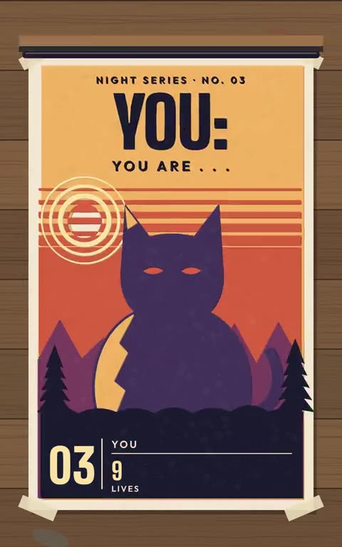
A vintage travel poster printed on camera: one flat ink per pull of the squeegee, stepped color bands instead of smooth blends, thin gaps where layers do not line up, and the key facts printed last.
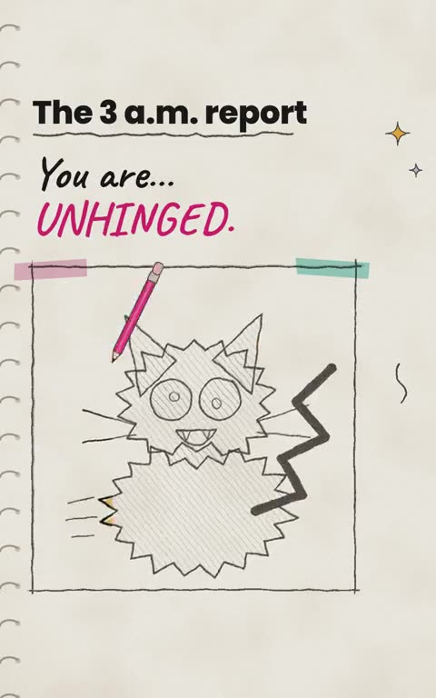
A cream spiral sketchbook where each idea is drawn three times: the caption writes in, a pencil sketch wipes across, then the colored version wipes over it, with a pencil riding along each wipe.
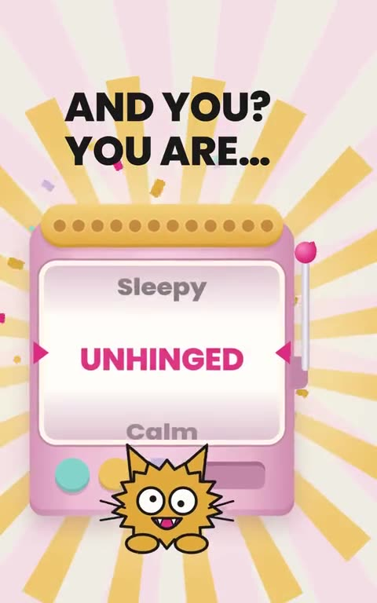
A pastel slot machine spins through options, slows with a satisfying click-click, lands on today's pick with a ding and a gold burst, then two comic panels explain it with zooms and pans.
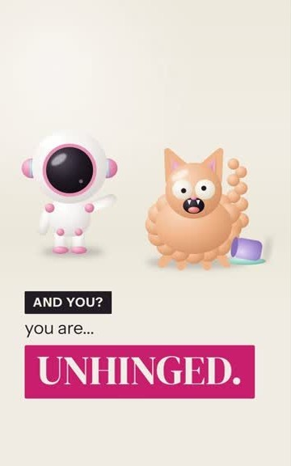
A soft, glossy clay miniature world on a warm cream set, with pastel robots and simple clay people acting out each idea.
A window being made and lit: thick dark lead lines draw the design, then jewel-colored panes light up one by one, and a slow band of light passes behind them like the sun moving.
A modernist poster that builds itself: circles, squares and bars in primary colors slide along a strict grid and lock into place, with clean left-aligned type snapping to the same lines.
A command line that tells the story: text types itself with a blinking cursor, pictures made of keyboard characters print line by line, and progress bars fill one character at a time.
A real street or beach seen from above that suddenly looks like a tiny toy model, with a thin strip of sharp focus, dreamy blur at the top and bottom, bright toy colors and little cars and people zipping about in quick bursts.
Old Japanese woodblock prints come to life: each shot is one finished print on soft paper, flat color blocks slightly off their black lines, a fading sky and a red seal.
A sketchbook page drawn on location: thin brown pen lines that wobble and never quite close, then see-through watercolor drops in on top, spilling past the lines and fading into cream paper at the edges.
A nature journal that paints itself: see-through brush strokes with dry-brush streaks on warm cotton paper, big shapes first and small details last, with a quiet handwritten note beside each subject.
A carved relief print coming to life: bold shapes in one or two inks stamp down onto textured paper with a heavy press, and carving lines cut themselves in.
A shiny millennium dream: liquid chrome blobs melt into hearts and stars, mirror type glints as a highlight sweeps across it, and bubbly windows pop open over a candy pink and baby blue sky.